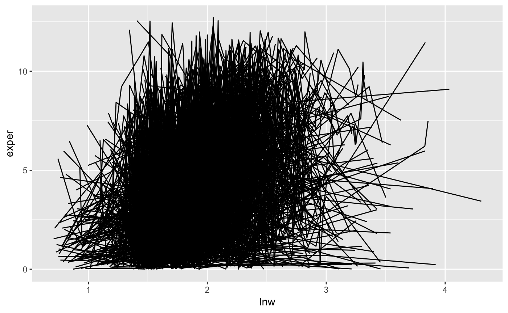
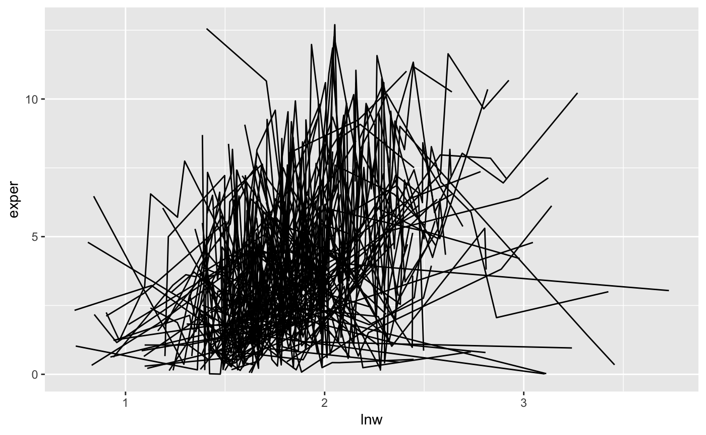
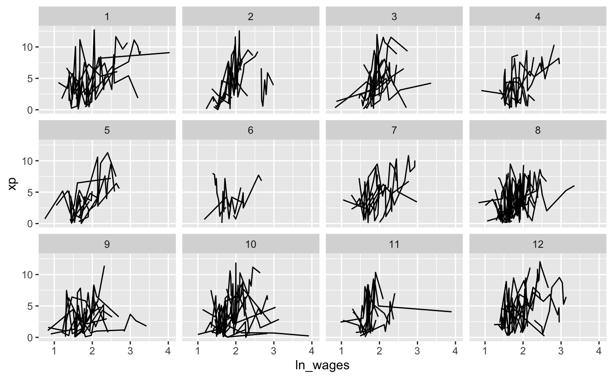
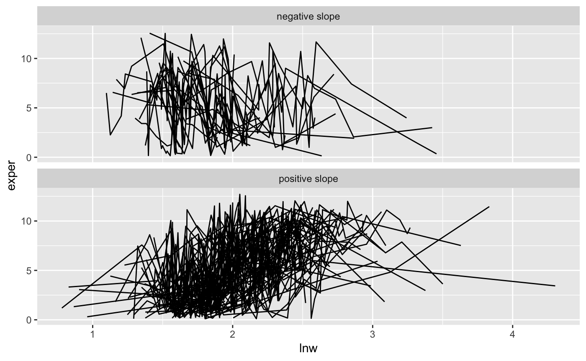

Starting Steps
basic_exploration.RmdWhen we first get a longitudinal dataset, you need to understand some of its structure. This vignette demonstrates part of the process of understanding your new longitudinal data.
How many observations are there?
We can find the number of observations with l_n_obs().
l_n_obs(wages, id)
#> # A tibble: 888 x 2
#> id l_n_obs
#> <int> <int>
#> 1 31 8
#> 2 36 10
#> 3 53 8
#> 4 122 10
#> 5 134 12
#> 6 145 9
#> 7 155 11
#> 8 173 6
#> 9 206 3
#> 10 207 11
#> # … with 878 more rowsA plot of this can help understand the distribution of observations

An equivalent table of the number of observations can be obtained using dplyr’s count().
library(dplyr)
#>
#> Attaching package: 'dplyr'
#> The following objects are masked from 'package:stats':
#>
#> filter, lag
#> The following objects are masked from 'package:base':
#>
#> intersect, setdiff, setequal, union
l_n_obs(wages, id) %>%
count(l_n_obs) %>%
mutate(prop = n/sum(n)) %>%
arrange(-prop)
#> # A tibble: 13 x 3
#> l_n_obs n prop
#> <int> <int> <dbl>
#> 1 9 127 0.143
#> 2 8 123 0.139
#> 3 10 113 0.127
#> 4 7 103 0.116
#> 5 6 92 0.104
#> 6 5 74 0.0833
#> 7 11 65 0.0732
#> 8 3 47 0.0529
#> 9 2 39 0.0439
#> 10 1 38 0.0428
#> 11 4 35 0.0394
#> 12 12 26 0.0293
#> 13 13 6 0.00676Look at as much of the raw data as possible
Following a recommendation from Diggle et al.’s book, we want to look at as much of the raw data as possible.
We know that looking at the lnw and expert yields a plate of spaghetti:

We might instead want to filter down to those with >3 observations, and then look at a random set of individuals.
We can filter down to those with >3 observations using filter_n_obs():
wages %>%
filter_n_obs(id = id, l_n_obs > 3) %>%
ggplot(aes(x = lnw,
y = exper,
group = id)) +
geom_line()But that’s still a lot of spaghetti.
We could then sample a set of say 100 observations, using sample_n_obs():
wages %>%
filter_n_obs(id = id, l_n_obs > 3) %>%
sample_n_obs(id = id, size = 100) %>%
ggplot(aes(x = lnw,
y = exper,
group = id)) +
geom_line()
That’s not bad, but we can split this up into a few random groups with add_k_groups:
wages %>%
filter_n_obs(id = id, l_n_obs > 3) %>%
sample_n_obs(id = id, size = 100) %>%
add_k_groups(id = id, k = 10) %>%
ggplot(aes(x = lnw,
y = exper,
group = id)) +
geom_line() +
facet_wrap(~.rand_id)
Highlight patterns of interest
We can break the data into groups based on the slope of exper~lnw
wages %>%
filter_n_obs(id = id, l_n_obs > 10) %>%
# sample_n_obs(id = id, size = 100) %>%
add_l_slope(id = id, formula = exper~lnw) %>%
mutate(slope_group = if_else(condition = l_slope_lnw > 0,
true = "positive slope",
false = "negative slope")) %>%
ggplot(aes(x = lnw,
y = exper,
group = id)) +
geom_line() +
facet_wrap(~slope_group, nrow = 2)